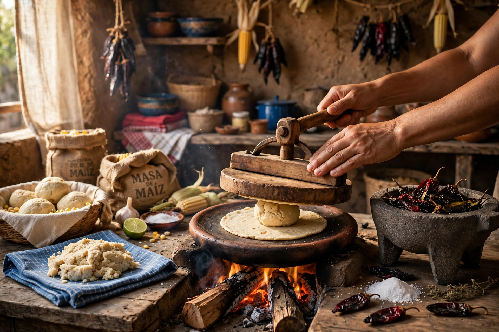

Historia de barrio y tradición comiteca
Nuestra tradición
“Llevamos mucho tiempo en esta zona de Tuxtla Gutiérrez, encendiendo el comal desde temprano y sirviendo a vecinos y visitantes.”
Proceso · Molino propio
Fuego · Leña seca
Zona · 10ª Poniente

Molcajete & comal Hecho a mano
Manifiesto del comal · Declaratoria de respeto al sabor
El fogón de Tuxtla
Maíz 100% criollo
Tortilla nixtamalizada de maíz criollo, hecha a mano todos los días. Sin atajos, sin harinas raras.
Leña comiteca
El sabor ahumado no se compra en bote: sale del fuego de leña y del comal al rojo vivo.
Honestidad y oficio
Porciones llenadoras, precios justos de barrio y comida servida humeando. Eso es todo.
Nuestros tacos y nuestras salsas
Tabla 01
A la chapa — El comal y la carne
- Tacos al pastor, bistec, arrachera, chorizo, campechana — y vegetarianos de nopal y queso.
- Carnitas al estilo único por kilo, medio kilo y cuarto de kilo, con tortillas calientes de comal.
- Todo acompañado de limones, cebollitas y salsas hechas a mano.
Tabla 02
Piedra volcánica — Salsas de molcajete hechas a mano
- Salsa verde cruda de tomatillo criollo — sabrosa, de picor medio.
- Salsa roja tatemada de chile seco y brasa — firme, picante.
- Martajadas cada día con ingredientes orgánicos y recetas de casa.
Tabla 03
Especialidad — Gorditas y quesadillas
- Gorditas rellenas de guisado artesanal, infladas al comal.
- Megaquesadillas con queso hebra chiapaneco fundido y carne a elegir.
- Masa crujiente por fuera, suave por dentro. Así salen siempre.
Sin secretos ni pretensiones
El espíritu de La Gordita
- Atención cálida, respetuosa y sin demora.
- Comida recién hecha, servida humeando a tu plato.
- Precios justos de barrio con porciones llenadoras.
Tuxtla Gutiérrez • Chiapas
Servicio continuo 8:30 – 18:00